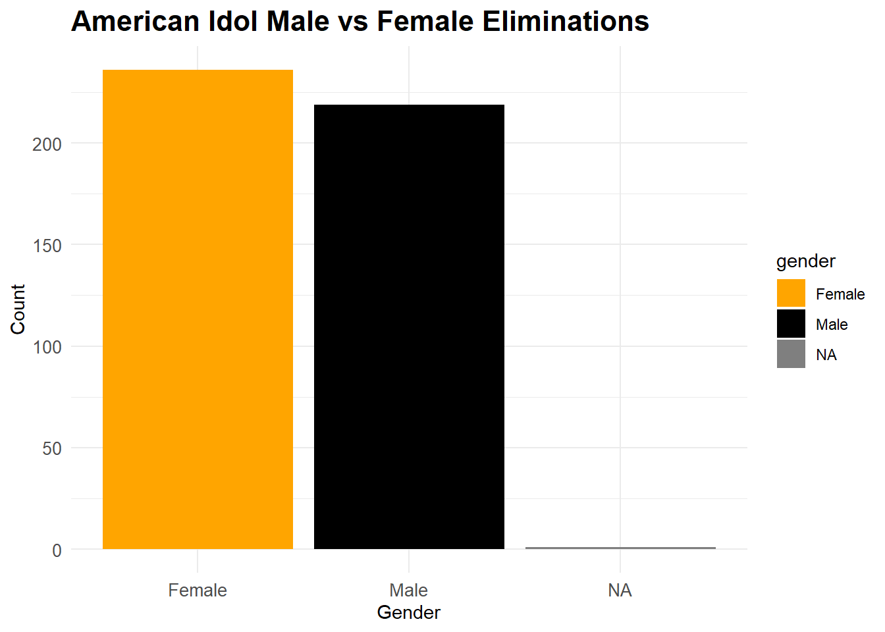
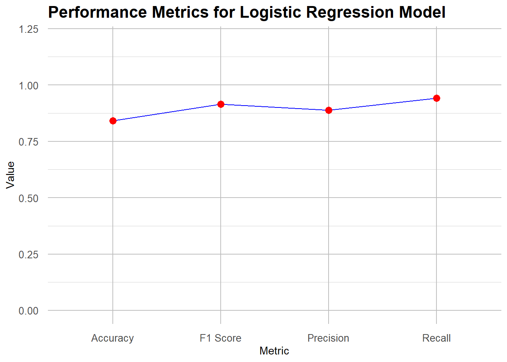

Warning: package 'tidytuesdayR' was built under R version 4.3.3
library(randomForest)
Warning: package 'randomForest' was built under R version 4.3.3
randomForest 4.7-1.1
Type rfNews() to see new features/changes/bug fixes.
Attaching package: 'randomForest'
The following object is masked from 'package:dplyr':
combine
The following object is masked from 'package:ggplot2':
margin
library(gbm)
Warning: package 'gbm' was built under R version 4.3.3
Loaded gbm 2.1.9
This version of gbm is no longer under development. Consider transitioning to gbm3, https://github.com/gbm-developers/gbm3
library(ggplot2)library(ggmap)
Warning: package 'ggmap' was built under R version 4.3.3
ℹ Google's Terms of Service: <https://mapsplatform.google.com>
Stadia Maps' Terms of Service: <https://stadiamaps.com/terms-of-service/>
OpenStreetMap's Tile Usage Policy: <https://operations.osmfoundation.org/policies/tiles/>
ℹ Please cite ggmap if you use it! Use `citation("ggmap")` for details.
library(maps)
Warning: package 'maps' was built under R version 4.3.3
Attaching package: 'maps'
The following object is masked from 'package:purrr':
map
library(ggthemes)
Warning: package 'ggthemes' was built under R version 4.3.3
library(highcharter)
Warning: package 'highcharter' was built under R version 4.3.3
Registered S3 method overwritten by 'quantmod':
method from
as.zoo.data.frame zoo
Highcharts (www.highcharts.com) is a Highsoft software product which is
not free for commercial and Governmental use
library(mapdata)
Warning: package 'mapdata' was built under R version 4.3.3
library(patchwork)
Warning: package 'patchwork' was built under R version 4.3.3
library(themis)
Warning: package 'themis' was built under R version 4.3.3
library(caret)
Warning: package 'caret' was built under R version 4.3.3
Loading required package: lattice
Attaching package: 'caret'
The following objects are masked from 'package:yardstick':
precision, recall, sensitivity, specificity
The following object is masked from 'package:purrr':
lift
library(recipes)library(kernlab)
Attaching package: 'kernlab'
The following object is masked from 'package:scales':
alpha
The following object is masked from 'package:purrr':
cross
The following object is masked from 'package:ggplot2':
alpha
library(knitr)
Let Explore!
tuesdata <- tidytuesdayR::tt_load(2024, week =30)
--- Compiling #TidyTuesday Information for 2024-07-23 ----
--- There are 6 files available ---
--- Starting Download ---
Downloading file 1 of 6: `auditions.csv`
Downloading file 2 of 6: `eliminations.csv`
Downloading file 3 of 6: `finalists.csv`
Downloading file 4 of 6: `ratings.csv`
Downloading file 5 of 6: `seasons.csv`
Downloading file 6 of 6: `songs.csv`
spc_tbl_ [190 × 6] (S3: spec_tbl_df/tbl_df/tbl/data.frame)
$ Contestant : chr [1:190] "Kelly Clarkson" "Justin Guarini" "Nikki McKibbin" "Tamyra Gray" ...
$ Birthday : chr [1:190] "24-Apr-82" "28-Oct-78" "28-Sep-78" "26-Jul-79" ...
$ Birthplace : chr [1:190] "Fort Worth, Texas" "Columbus, Georgia" "Grand Prairie, Texas" "Takoma Park, Maryland" ...
$ Hometown : chr [1:190] "Burleson, Texas" "Doylestown, Pennsylvania" NA "Atlanta, Georgia" ...
$ Description: chr [1:190] "She performed Aretha Franklin's version of \"Respectand Vanessa Williams' \"Save The Best For Lastin the Hollywood rounds." "He performed Oleta Adams' version of \"Get Herein the Hollywood rounds." "She had previously been on Popstars and auditioned with Gloria Gaynor's \"I Will Surviveand Whitney Houston's \"| __truncated__ "She had appeared on TV commercials and worked with other artists before auditioning for Idol, and was crowned M"| __truncated__ ...
$ Season : num [1:190] 1 1 1 1 1 1 1 1 1 1 ...
- attr(*, "spec")=
.. cols(
.. Contestant = col_character(),
.. Birthday = col_character(),
.. Birthplace = col_character(),
.. Hometown = col_character(),
.. Description = col_character(),
.. Season = col_double()
.. )
- attr(*, "problems")=<externalptr>
# Inspect the data structures to verify column namesglimpse(finalists)
Warning: There were 2 warnings in `mutate()`.
The first warning was:
ℹ In argument: `dvr_viewers_millions = as.numeric(dvr_viewers_millions)`.
Caused by warning:
! NAs introduced by coercion
ℹ Run `dplyr::last_dplyr_warnings()` to see the 1 remaining warning.
Warning: There was 1 warning in `mutate()`.
ℹ In argument: `season = as.numeric(season)`.
Caused by warning:
! NAs introduced by coercion
# Merge relevant datasets# Check if gender exists in eliminations_clean and join with finalists_cleanif ("gender"%in%colnames(eliminations_clean)) { finalists_clean <- finalists_clean %>%inner_join(eliminations_clean %>%select(contestant, gender), by =c("Contestant"="contestant"))}# Merge with seasons_cleandata <- finalists_clean %>%inner_join(seasons_clean, by =c("Season"="season"))data <- songs_clean %>%left_join(finalists_clean, by =c("contestant"="Contestant", "season"="Season")) %>%mutate(finalist =ifelse(!is.na(Hometown), 1, 0))
Exploring our Data
# Inspect cleaned datastr(auditions_clean)
tibble [142 × 12] (S3: tbl_df/tbl/data.frame)
$ season : num [1:142] 1 1 1 1 1 1 1 2 2 2 ...
$ audition_date_start : Date[1:142], format: "2002-04-20" "2002-04-23" ...
$ audition_date_end : Date[1:142], format: "2002-04-22" "2002-04-25" ...
$ audition_city : chr [1:142] "Los Angeles, California" "Seattle, Washington" "Chicago, Illinois" "New York City, New York" ...
$ audition_venue : chr [1:142] "Westin Bonaventure Hotel" "Hyatt Regency Hotel" "Congress Plaza Hotel" "Millenium Hilton Hotel" ...
$ episodes : chr [1:142] NA NA NA NA ...
$ episode_air_date : Date[1:142], format: NA NA ...
$ callback_venue : chr [1:142] NA NA NA NA ...
$ callback_date_start : Date[1:142], format: NA NA ...
$ callback_date_end : Date[1:142], format: NA NA ...
$ tickets_to_hollywood: num [1:142] 31 10 23 25 15 11 6 22 35 46 ...
$ guest_judge : chr [1:142] NA NA NA NA ...
str(eliminations_clean)
tibble [456 × 46] (S3: tbl_df/tbl/data.frame)
$ season : num [1:456] 1 1 1 1 1 1 1 1 1 1 ...
$ place : chr [1:456] "1" "2" "3" "4" ...
$ gender : chr [1:456] "Female" "Male" "Female" "Female" ...
$ contestant: chr [1:456] "Kelly Clarkson" "Justin Guarini" "Nikki McKibbin" "Tamyra Gray" ...
$ top_36 : chr [1:456] NA NA NA NA ...
$ top_36_2 : chr [1:456] NA NA NA NA ...
$ top_36_3 : chr [1:456] NA NA NA NA ...
$ top_36_4 : chr [1:456] NA NA NA NA ...
$ top_32 : chr [1:456] NA NA NA NA ...
$ top_32_2 : chr [1:456] NA NA NA NA ...
$ top_32_3 : chr [1:456] NA NA NA NA ...
$ top_32_4 : chr [1:456] NA NA NA NA ...
$ top_30 : chr [1:456] "N/A" "N/A" "N/A" "Safe (1st)" ...
$ top_30_2 : chr [1:456] "Safe (2nd)" "Safe (1st)" "N/A" "N/A" ...
$ top_30_3 : chr [1:456] "N/A" "N/A" "Safe (2nd)" "N/A" ...
$ top_25 : chr [1:456] NA NA NA NA ...
$ top_25_2 : chr [1:456] NA NA NA NA ...
$ top_25_3 : chr [1:456] NA NA NA NA ...
$ top_24 : chr [1:456] NA NA NA NA ...
$ top_24_2 : chr [1:456] NA NA NA NA ...
$ top_24_3 : chr [1:456] NA NA NA NA ...
$ top_20 : chr [1:456] NA NA NA NA ...
$ top_20_2 : chr [1:456] NA NA NA NA ...
$ top_16 : chr [1:456] NA NA NA NA ...
$ top_14 : chr [1:456] NA NA NA NA ...
$ top_13 : chr [1:456] NA NA NA NA ...
$ top_12 : chr [1:456] NA NA NA NA ...
$ top_11 : chr [1:456] NA NA NA NA ...
$ top_11_2 : chr [1:456] NA NA NA NA ...
$ wildcard : chr [1:456] "N/A" "N/A" "N/A" "N/A" ...
$ comeback : logi [1:456] NA NA NA NA NA NA ...
$ top_10 : chr [1:456] "Safe" "Safe" "Bottom Three" "Safe" ...
$ top_9 : chr [1:456] NA NA NA NA ...
$ top_9_2 : chr [1:456] NA NA NA NA ...
$ top_8 : chr [1:456] "Safe" "Safe" "Safe" "Safe" ...
$ top_8_2 : chr [1:456] NA NA NA NA ...
$ top_7 : chr [1:456] "Safe" "Bottom Two" "Bottom Three" "Safe" ...
$ top_7_2 : chr [1:456] NA NA NA NA ...
$ top_6 : chr [1:456] "Safe" "Safe" "Bottom Three" "Safe" ...
$ top_6_2 : chr [1:456] NA NA NA NA ...
$ top_5 : chr [1:456] "Safe" "Safe" "Bottom Two" "Safe" ...
$ top_5_2 : chr [1:456] NA NA NA NA ...
$ top_4 : chr [1:456] "Safe" "Safe" "Bottom Two" "Eliminated" ...
$ top_4_2 : chr [1:456] NA NA NA NA ...
$ top_3 : chr [1:456] "Safe" "Safe" "Eliminated" NA ...
$ finale : chr [1:456] "Winner" "Runner-Up" NA NA ...
str(finalists_clean)
tibble [185 × 7] (S3: tbl_df/tbl/data.frame)
$ Contestant : chr [1:185] "Kelly Clarkson" "Justin Guarini" "Nikki McKibbin" "Tamyra Gray" ...
$ Birthday : Date[1:185], format: NA NA ...
$ Birthplace : chr [1:185] "Fort Worth, Texas" "Columbus, Georgia" "Grand Prairie, Texas" "Takoma Park, Maryland" ...
$ Hometown : chr [1:185] "Burleson, Texas" "Doylestown, Pennsylvania" NA "Atlanta, Georgia" ...
$ Description: chr [1:185] "She performed Aretha Franklin's version of \"Respectand Vanessa Williams' \"Save The Best For Lastin the Hollywood rounds." "He performed Oleta Adams' version of \"Get Herein the Hollywood rounds." "She had previously been on Popstars and auditioned with Gloria Gaynor's \"I Will Surviveand Whitney Houston's \"| __truncated__ "She had appeared on TV commercials and worked with other artists before auditioning for Idol, and was crowned M"| __truncated__ ...
$ Season : num [1:185] 1 1 1 1 1 1 1 1 1 1 ...
$ gender : chr [1:185] "Female" "Male" "Female" "Female" ...
str(ratings_clean)
tibble [593 × 17] (S3: tbl_df/tbl/data.frame)
$ season : num [1:593] 1 1 1 1 1 1 1 1 1 1 ...
$ show_number : num [1:593] 1 2 3 4 5 6 7 8 9 10 ...
$ episode : chr [1:593] "Auditions" "Hollywood Week" "Top 30: Group 1" "Top 30: Group 1 results" ...
$ airdate : Date[1:593], format: NA NA ...
$ 18_49_rating_share : chr [1:593] "4.8" "5.2" "5.2" "4.7" ...
$ viewers_in_millions : num [1:593] 9.85 11.24 10.3 9.47 9.08 ...
$ timeslot_et : chr [1:593] NA NA NA NA ...
$ dvr_18_49 : chr [1:593] NA NA NA NA ...
$ dvr_viewers_millions : num [1:593] NA NA NA NA NA NA NA NA NA NA ...
$ total_18_49 : chr [1:593] NA NA NA NA ...
$ total_viewers_millions : num [1:593] NA NA NA NA NA NA NA NA NA NA ...
$ weekrank : chr [1:593] "12" "6" "6" "22" ...
$ ref : logi [1:593] NA NA NA NA NA NA ...
$ share : chr [1:593] NA NA NA NA ...
$ nightlyrank : num [1:593] NA NA NA NA NA NA NA NA NA NA ...
$ rating_share_households: chr [1:593] NA NA NA NA ...
$ rating_share : chr [1:593] "6.1 / 11" "6.9 / 12" "6.2 / 11" "5.8 / 10" ...
str(seasons_clean)
tibble [18 × 10] (S3: tbl_df/tbl/data.frame)
$ season : num [1:18] 1 2 3 4 5 6 7 8 9 10 ...
$ winner : chr [1:18] "Kelly Clarkson" "Ruben Studdard" "Fantasia Barrino" "Carrie Underwood" ...
$ runner_up : chr [1:18] "Justin Guarini" "Clay Aiken" "Diana DeGarmo" "Bo Bice" ...
$ original_release: chr [1:18] "June 11 (2002-06-11) –September 4, 2002 (2002-09-04)" "January 21 (2003-01-21) –May 21, 2003 (2003-05-21)" "January 19 (2004-01-19) –May 26, 2004 (2004-05-26)" "January 18 (2005-01-18) –May 25, 2005 (2005-05-25)" ...
$ original_network: chr [1:18] "Fox" "Fox" "Fox" "Fox" ...
$ hosted_by : chr [1:18] "Ryan Seacrest; Brian Dunkleman" "Ryan Seacrest" "Ryan Seacrest" "Ryan Seacrest" ...
$ judges : chr [1:18] "Paula Abdul; Simon Cowell; Randy Jackson" "Paula Abdul; Simon Cowell; Randy Jackson" "Paula Abdul; Simon Cowell; Randy Jackson" "Paula Abdul; Simon Cowell; Randy Jackson" ...
$ no_of_episodes : num [1:18] NA NA NA NA NA NA NA NA NA NA ...
$ finals_venue : chr [1:18] "Kodak Theatre" "Gibson Amphitheatre" "Kodak Theatre" "Kodak Theatre" ...
$ mentor : chr [1:18] NA NA NA NA ...
str(songs_clean)
tibble [2,429 × 8] (S3: tbl_df/tbl/data.frame)
$ season : num [1:2429] NA NA NA NA NA NA NA NA NA NA ...
$ week : chr [1:2429] "20020618_top_30_group_1" "20020618_top_30_group_1" "20020618_top_30_group_1" "20020618_top_30_group_1" ...
$ order : num [1:2429] 1 2 3 4 5 6 7 8 9 10 ...
$ contestant: chr [1:2429] "Tamyra Gray" "Jim Verraros" "Adriel Herrera" "Rodesia Eaves" ...
$ song : chr [1:2429] "And I Am Telling You I'm Not Going" "When I Fall in Love" "I'll Be" "Daydream Believer" ...
$ artist : chr [1:2429] "Jennifer Holliday" "Doris Day" "Edwin McCain" "The Monkees" ...
$ song_theme: chr [1:2429] NA NA NA NA ...
$ result : chr [1:2429] "Advanced (1st)" "Advanced (3rd)" "Eliminated" "Eliminated" ...
summary(auditions_clean)
season audition_date_start audition_date_end audition_city
Min. : 1.00 Min. :2002-04-20 Min. :2002-04-22 Length:142
1st Qu.: 6.00 1st Qu.:2006-08-11 1st Qu.:2006-08-11 Class :character
Median :10.00 Median :2010-09-05 Median :2010-09-05 Mode :character
Mean :10.37 Mean :2011-04-14 Mean :2011-04-14
3rd Qu.:15.00 3rd Qu.:2015-09-05 3rd Qu.:2015-09-05
Max. :18.00 Max. :2019-09-21 Max. :2019-09-21
audition_venue episodes episode_air_date callback_venue
Length:142 Length:142 Min. :NA Length:142
Class :character Class :character 1st Qu.:NA Class :character
Mode :character Mode :character Median :NA Mode :character
Mean :NaN
3rd Qu.:NA
Max. :NA
NA's :142
callback_date_start callback_date_end tickets_to_hollywood
Min. :2002-02-06 Min. :2002-02-06 Min. : 6.0
1st Qu.:2006-10-02 1st Qu.:2006-10-03 1st Qu.: 20.0
Median :2010-11-09 Median :2010-11-10 Median : 29.0
Mean :2011-06-11 Mean :2011-06-12 Mean : 41.8
3rd Qu.:2015-09-13 3rd Qu.:2015-09-14 3rd Qu.: 37.0
Max. :2019-09-21 Max. :2019-09-21 Max. :561.0
NA's :13 NA's :13 NA's :48
guest_judge
Length:142
Class :character
Mode :character
summary(eliminations_clean)
season place gender contestant
Min. : 1.00 Length:456 Length:456 Length:456
1st Qu.: 4.00 Class :character Class :character Class :character
Median : 8.00 Mode :character Mode :character Mode :character
Mean : 8.86
3rd Qu.:13.00
Max. :18.00
top_36 top_36_2 top_36_3 top_36_4
Length:456 Length:456 Length:456 Length:456
Class :character Class :character Class :character Class :character
Mode :character Mode :character Mode :character Mode :character
top_32 top_32_2 top_32_3 top_32_4
Length:456 Length:456 Length:456 Length:456
Class :character Class :character Class :character Class :character
Mode :character Mode :character Mode :character Mode :character
top_30 top_30_2 top_30_3 top_25
Length:456 Length:456 Length:456 Length:456
Class :character Class :character Class :character Class :character
Mode :character Mode :character Mode :character Mode :character
top_25_2 top_25_3 top_24 top_24_2
Length:456 Length:456 Length:456 Length:456
Class :character Class :character Class :character Class :character
Mode :character Mode :character Mode :character Mode :character
top_24_3 top_20 top_20_2 top_16
Length:456 Length:456 Length:456 Length:456
Class :character Class :character Class :character Class :character
Mode :character Mode :character Mode :character Mode :character
top_14 top_13 top_12 top_11
Length:456 Length:456 Length:456 Length:456
Class :character Class :character Class :character Class :character
Mode :character Mode :character Mode :character Mode :character
top_11_2 wildcard comeback top_10
Length:456 Length:456 Mode:logical Length:456
Class :character Class :character NA's:456 Class :character
Mode :character Mode :character Mode :character
top_9 top_9_2 top_8 top_8_2
Length:456 Length:456 Length:456 Length:456
Class :character Class :character Class :character Class :character
Mode :character Mode :character Mode :character Mode :character
top_7 top_7_2 top_6 top_6_2
Length:456 Length:456 Length:456 Length:456
Class :character Class :character Class :character Class :character
Mode :character Mode :character Mode :character Mode :character
top_5 top_5_2 top_4 top_4_2
Length:456 Length:456 Length:456 Length:456
Class :character Class :character Class :character Class :character
Mode :character Mode :character Mode :character Mode :character
top_3 finale
Length:456 Length:456
Class :character Class :character
Mode :character Mode :character
summary(finalists_clean)
Contestant Birthday Birthplace Hometown
Length:185 Min. :NA Length:185 Length:185
Class :character 1st Qu.:NA Class :character Class :character
Mode :character Median :NA Mode :character Mode :character
Mean :NaN
3rd Qu.:NA
Max. :NA
NA's :185
Description Season gender
Length:185 Min. : 1.000 Length:185
Class :character 1st Qu.: 5.000 Class :character
Mode :character Median : 9.000 Mode :character
Mean : 8.957
3rd Qu.:13.000
Max. :17.000
summary(ratings_clean)
season show_number episode airdate
Min. : 1.000 Min. : 1.00 Length:593 Min. :NA
1st Qu.: 4.000 1st Qu.: 9.00 Class :character 1st Qu.:NA
Median : 8.000 Median :18.00 Mode :character Median :NA
Mean : 8.295 Mean :19.24 Mean :NaN
3rd Qu.:12.000 3rd Qu.:29.00 3rd Qu.:NA
Max. :18.000 Max. :44.00 Max. :NA
NA's :593
18_49_rating_share viewers_in_millions timeslot_et dvr_18_49
Length:593 Min. : 5.38 Length:593 Length:593
Class :character 1st Qu.:12.57 Class :character Class :character
Mode :character Median :21.76 Mode :character Mode :character
Mean :19.88
3rd Qu.:26.09
Max. :38.10
NA's :3
dvr_viewers_millions total_18_49 total_viewers_millions
Min. :0.950 Length:593 Min. : 5.480
1st Qu.:1.280 Class :character 1st Qu.: 8.290
Median :1.530 Mode :character Median : 8.790
Mean :1.491 Mean : 8.771
3rd Qu.:1.685 3rd Qu.: 9.200
Max. :1.950 Max. :11.840
NA's :542 NA's :542
weekrank ref share nightlyrank
Length:593 Mode:logical Length:593 Min. :1.000
Class :character NA's:593 Class :character 1st Qu.:1.000
Mode :character Mode :character Median :2.000
Mean :2.083
3rd Qu.:3.000
Max. :4.000
NA's :569
rating_share_households rating_share
Length:593 Length:593
Class :character Class :character
Mode :character Mode :character
summary(seasons_clean)
season winner runner_up original_release
Min. : 1.00 Length:18 Length:18 Length:18
1st Qu.: 5.25 Class :character Class :character Class :character
Median : 9.50 Mode :character Mode :character Mode :character
Mean : 9.50
3rd Qu.:13.75
Max. :18.00
original_network hosted_by judges no_of_episodes
Length:18 Length:18 Length:18 Min. :16.00
Class :character Class :character Class :character 1st Qu.:18.25
Mode :character Mode :character Mode :character Median :19.00
Mean :19.50
3rd Qu.:20.25
Max. :24.00
NA's :14
finals_venue mentor
Length:18 Length:18
Class :character Class :character
Mode :character Mode :character
summary(songs_clean)
season week order contestant
Min. : NA Length:2429 Min. : 1.000 Length:2429
1st Qu.: NA Class :character 1st Qu.: 3.000 Class :character
Median : NA Mode :character Median : 5.000 Mode :character
Mean :NaN Mean : 5.931
3rd Qu.: NA 3rd Qu.: 8.000
Max. : NA Max. :40.000
NA's :2429
song artist song_theme result
Length:2429 Length:2429 Length:2429 Length:2429
Class :character Class :character Class :character Class :character
Mode :character Mode :character Mode :character Mode :character
# Bar graph showing the number of tickets to Hollywood based on top 10 audition citiestop_10_cities <- auditions_clean %>%group_by(audition_city) %>%summarize(total_tickets =sum(tickets_to_hollywood, na.rm =TRUE)) %>%arrange(desc(total_tickets)) %>%slice(1:10)ggplot(top_10_cities, aes(x = audition_city, y = total_tickets)) +geom_col(fill ="red") +theme_minimal() +coord_flip() +labs(title ="Number of Tickets to Hollywood by Top 10 Audition Cities", x ="City", y ="Tickets to Hollywood") +theme(plot.title =element_text(size =16, face ="bold"),axis.text.x =element_text(size =10),axis.text.y =element_text(size =10),axis.ticks.length =unit(0.25, "cm"))
# Comparison of male eliminations vs female eliminationsggplot(eliminations_clean, aes(x = gender, fill = gender)) +geom_bar() +scale_fill_manual(values =c("orange", "black")) +theme_minimal() +labs(title ="American Idol Male vs Female Eliminations", x ="Gender", y ="Count") +theme(plot.title =element_text(size =16, face ="bold"),axis.text.x =element_text(size =10),axis.text.y =element_text(size =10))

# Trend of number of viewers per episode over the seasonsratings_clean %>%group_by(season) %>%summarise(average_viewers =mean(viewers_in_millions, na.rm =TRUE)) %>%hchart("line", hcaes(x = season, y = average_viewers), name ="Average Viewers") %>%hc_title(text ="Number of Viewers Per Episode Over the Seasons") %>%hc_xAxis(title =list(text ="Season")) %>%hc_yAxis(title =list(text ="Average Viewers (Millions)")) %>%hc_plotOptions(line =list(color ="#00008B"))
Modeling
# Merge necessary datasong_data <- songs %>%group_by(contestant) %>%summarise(total_songs =n(), genres =paste(unique(song_theme), collapse =","))# Define winners based on place column in the eliminations tablewinners_data <- eliminations %>%filter(place =="1") %>%select(season, contestant)# Add information about winnerscontestant_details <- finalists %>%mutate(is_winner =if_else(Contestant %in% winners_data$contestant, 1, 0)) %>%left_join(song_data, by =c("Contestant"="contestant"))# Handle missing values (if any)contestant_details <- contestant_details %>%replace_na(list(total_songs =0, genres ="unknown"))# Ensure the is_winner variable is a factor with two levelscontestant_details <- contestant_details %>%mutate(is_winner =factor(is_winner, levels =c(0, 1)))# Remove rows with any NA valuescontestant_details <-na.omit(contestant_details)# Split the data into training and testing setsset.seed(123)train_indices <-createDataPartition(contestant_details$is_winner, p =0.8, list =FALSE)train_set <- contestant_details[train_indices, ]test_set <- contestant_details[-train_indices, ]# Pre-process Dataprep_recipe <-recipe(is_winner ~ total_songs, data = train_set) %>%step_normalize(all_predictors())prepped_recipe <-prep(prep_recipe)train_processed <-bake(prepped_recipe, new_data =NULL)test_processed <-bake(prepped_recipe, new_data = test_set)# Define and Fit at least 3 Different Model Types## Model 1: Logistic Regressionlog_reg_spec <-logistic_reg() %>%set_engine("glm")log_reg_workflow <-workflow() %>%add_model(log_reg_spec) %>%add_recipe(prep_recipe)## Model 2: Random Forestrf_spec <-rand_forest(trees =1000) %>%set_engine("ranger") %>%set_mode("classification")rf_workflow <-workflow() %>%add_model(rf_spec) %>%add_recipe(prep_recipe)## Model 3: Support Vector Machinesvm_spec <-svm_rbf() %>%set_engine("kernlab") %>%set_mode("classification")svm_workflow <-workflow() %>%add_model(svm_spec) %>%add_recipe(prep_recipe)# Create cross-validation foldsset.seed(123)cv_folds <-vfold_cv(train_set, v =5)# Define metricsmetric_set <- yardstick::metric_set(yardstick::roc_auc, yardstick::accuracy)# Fit and evaluate models using cross-validationlog_reg_results <-fit_resamples( log_reg_workflow,resamples = cv_folds,metrics = metric_set)rf_results <-fit_resamples( rf_workflow,resamples = cv_folds,metrics = metric_set)
Warning: package 'ranger' was built under R version 4.3.3
# Choose the best model based on cross-validation performanceoptimal_model_workflow <- log_reg_workflow # Fit the best model on the entire training settrained_model <-fit(optimal_model_workflow, data = train_set)# Evaluate the model on the test settest_predictions <-predict(trained_model, test_set) %>%bind_cols(test_set)# Creating a confusion matrixconf_matrix <-confusionMatrix(test_predictions$.pred_class, test_set$is_winner)# Print confusion matrixprint(conf_matrix)
Confusion Matrix and Statistics
Reference
Prediction 0 1
0 16 2
1 1 0
Accuracy : 0.8421
95% CI : (0.6042, 0.9662)
No Information Rate : 0.8947
P-Value [Acc > NIR] : 0.8676
Kappa : -0.0755
Mcnemar's Test P-Value : 1.0000
Sensitivity : 0.9412
Specificity : 0.0000
Pos Pred Value : 0.8889
Neg Pred Value : 0.0000
Prevalence : 0.8947
Detection Rate : 0.8421
Detection Prevalence : 0.9474
Balanced Accuracy : 0.4706
'Positive' Class : 0
# Define performance metricsperformance_metrics <-data.frame(Metric =c("Accuracy", "Precision", "Recall", "F1 Score"),Value =c(as.numeric(accuracy), as.numeric(precision), as.numeric(recall), as.numeric(f1_score)))# Plotting the metrics using ggplot2library(ggplot2)ggplot(performance_metrics, aes(x = Metric, y = Value, group =1)) +geom_line(color ="blue") +geom_point(size =3, color ="red") +theme_minimal() +labs(title ="Performance Metrics for Logistic Regression Model",x ="Metric",y ="Value") +ylim(0, 1.2) +theme(plot.title =element_text(size =16, face ="bold"),axis.text.x =element_text(size =10),axis.text.y =element_text(size =10),axis.ticks.length =unit(0.25, "cm"),panel.grid.major =element_line(color ="grey"),panel.grid.minor =element_line(color ="lightgrey"))

summary
The data supports the hypothesis that contestants who perform more songs are more likely to reach the finals. The Logistic Regression model shows high accuracy with reasonable precision and recall, indicating that the number of songs sung is a strong predictor of a contestant’s likelihood of making it to the finals. Overall, the analysis confirms that singing more songs increases the chances of reaching the finals, validating the hypothesis and providing valuable insights into the factors contributing to success on American Idol.